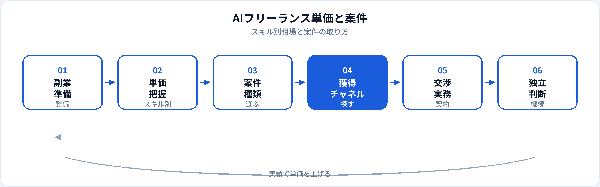

「AIフリーランスは儲かる」と聞いても、クラウドソーシングの時給1,000円台と、LLM実装の月額100万円超は同じ市場に共存しています。本記事は市場・年収カテゴリとして、スキル別の単価レンジ、案件の種類、獲得チャネル、契約・交渉の現実を2026年6月時点で整理します。始める前の就規確認や時間の使い方は副業の準備を先に読むことをおすすめします。
本記事と副業準備記事の使い分け
| 記事 | 主な内容 | いつ読むか |
|---|---|---|
| 副業の準備と時間の使い方 | 就規・競業避止、スキル整備、本業両立 | 案件を取る前の整備 |
| 本記事（単価と案件） | 相場感、案件種別、獲得・契約の現実 | 単価を把握し、案件を探すとき |
| 正社員の年収相場 | 国内の雇用年収レンジ | フリーランスと正社員を比較するとき |
| 海外との年収比較 | リモート・USD契約の相場感 | 海外企業への業務委託を検討するとき |
市場の二層構造
AI関連の業務委託市場は、大きく「単発・低単価・競争多い」層と、「継続・高単価・紹介中心」層に分かれます。ChatGPT登場以降、プロンプト作成や記事生成のスポット案件は増えましたが、単価は下がりやすい一方、本番で動くRAG・評価・運用を任せる案件は引き続き高めです。
同じ「AIフリーランス」でも、何を納品するかで年収感が3〜10倍変わることを前提に、以下のレンジを読んでください。
スキル別の単価レンジ
下表は日本国内・業務委託の一般的な相場感です（2026年6月時点。税抜・個人契約が多い）。エージェント経由では提示額が異なります。
| スキル・役割 | 時給の目安 | 月額（週2〜3日）の目安 |
|---|---|---|
| 生成AI活用支援・プロンプト設計 | 3,000〜8,000円 | 40万〜80万円前後 |
| データ分析・可視化（Python/SQL） | 4,000〜10,000円 | 50万〜100万円前後 |
| 機械学習・従来型MLの実装 | 5,000〜12,000円 | 60万〜120万円前後 |
| LLM・RAG・エージェント実装 | 6,000〜15,000円以上 | 80万〜150万円以上 |
| シニア（設計〜運用・リード） | 8,000〜20,000円以上 | 100万〜200万円以上 |
クラウドソーシングの最下層では、時給1,500〜3,000円台の「AIライティング」「簡易プロンプト」も見られます。実績作りの場として割り切るか、最初から狙う層を分けるかが重要です。
正社員の年収感との比較は国内年収の推移と相場を参照してください。フリーランスは社会保険・有給・案件空白を自分で背負うため、時給をそのまま年収換算しないでください。
案件の種類と単価の関係
| 案件タイプ | 内容の例 | 単価の傾向 |
|---|---|---|
| スポット・請負 | レポート1本、PoCデモ、データクレンジング | 固定額。見積ミスで時給換算が下がりやすい |
| 準委任（時間契約） | 週2日の開発支援、社内AI推進の伴走 | 時給・月額が明確。継続しやすい |
| 請負（成果物納品） | RAGシステム一式、評価パイプライン構築 | 高額も可能。範囲定義・変更管理が必須 |
| コンサル・研修 | 導入戦略、社内ワークショップ | 実績・肩書きで単価が決まりやすい |
| 運用・保守 | 監視、プロンプト更新、再学習 | 月額ストック型。安定収入に向く |
単価を上げやすいのは、再現可能な成果物（GitHub、評価スコア、コスト削減率）を示せる実装・運用案件です。ポートフォリオで説明できる形にしておくと、次の交渉に効きます。
案件の取り方（チャネル）
クラウドソーシング
クラウドワークス、ランサーズ、ココナラなど。参入障壁は低いが競争が激しい。評価・実績の蓄積が次の単価につながる。
フリーランスエージェント
レバテック、ギークス、Midworks等。単価はエージェント手数料分の構造があるが、準委任の継続案件に出会いやすい。
知人・元同僚の紹介
最も単価が高くなりやすい。副業で信頼を積んだ先の紹介が、独立後の主戦場になることも多い。
SNS・技術発信
X、Zenn、登壇など。直接問い合わせや採用・委託のきっかけに。即効性は低いが中長期で効く。
海外向けはUpwork等でUSD提示の案件もありますが、競争・タイムゾーン・英語がハードルになります。相場感は海外記事のリモート節も参照してください。
-
入口：クラウドソーシングで実績1〜3件
守秘の範囲で成果をポートフォリオ化。低単価でも「納期・品質」の評価を取る。
-
中間：エージェント登録＋紹介依頼
希望単価・稼働日数・リモート可否を明確に。スキルシートは職種名より実装スタックを書く。
-
上位：直契約・継続準委任
運用込みの月額契約へ。単発請負より、空白期間リスクが下がる。
契約形態と交渉のポイント
-
準委任と請負の違いを確認
準委任は作業時間ベース、請負は成果物ベース。後者は仕様変更で損しやすい。範囲外の追加は別見積に。
-
稼働上限と超過単価
「週20時間まで」「超過は時給○○円」を契約書に明記。無制限の伴走は避ける。
-
支払サイト
月末締め翌月末払いが多い。個人事業主は資金繰りに注意。着手金の有無も確認。
-
守秘・成果物の帰属
副業と同様、クライアントのデータ・コードの持ち出し禁止。ポートフォリオ掲載は事前許可を。
-
単価交渉の材料
同業他社比ではなく、「削減した工数」「導入した評価指標」などクライアント利益で語る。
税務・開業届・インボイス制度などの手続きは個人の状況により異なります。本記事は一般的な整理であり、税務・法的助言ではありません。
独立の判断ライン
フリーランスとして本業を辞めるタイミングに、正解は一つありません。次のような状態がそろい始めたら、検討の材料が揃いやすいです。
| 指標 | 目安の考え方 |
|---|---|
| 継続案件 | 3〜6ヶ月以上の準委任が1件以上、または複数のリピート |
| 収入の安定 | 委託収入が生活費＋保険・税のバッファを数ヶ月カバー |
| 単価 | 希望時給で次の案件が取れる（紹介 or エージェント） |
| スキル | 需要のある実装（例：LLM本番運用）を一人称で説明できる |
いきなり独立せず、副業で実績を積んでから契約を増やす道が最も多いです。正社員の安定と比較する場合は将来性の整理もあわせて読んでください。
単価アップの流れ

よくある質問
AIフリーランスの相場はいくら？
スキルにより幅があります。生成AI支援は時給3,000〜8,000円前後、LLM実装は6,000〜15,000円以上になることがある一般論です（2026年6月時点）。
クラウドソーシングから始めてよい？
実績作りの入口として有効です。単価が上がったら紹介・エージェント・直契約へ移行するのが一般的です。
副業準備の記事との違いは？
副業の準備は始める前の整備、本記事は相場・案件・契約の市場視点です。
未経験でもAI案件は取れる？
小規模なデータ整理やプロンプト支援から入る例はあります。高単価開発はポートフォリオと実装力が前提になりやすいです。
プロンプトエンジニアとして単価は上がる？
設計・評価・業務組み込みまで担えると単価は上がりやすいです。職種の全体像はプロンプトエンジニアとはを参照してください。